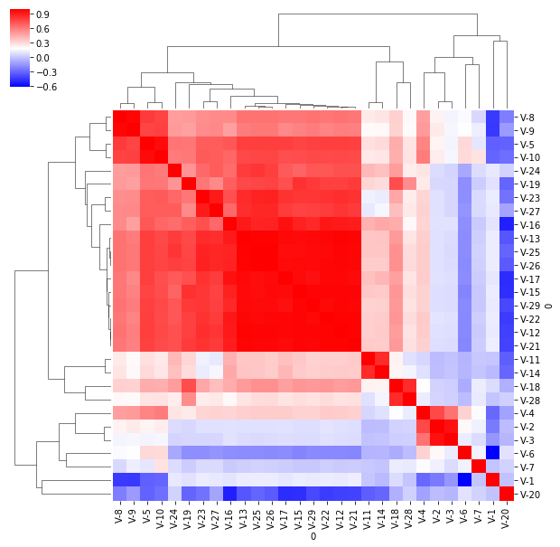

Heatmap Color Labels in Seaborn
Multiple Layers of Color Labels in Seaborn Heatmaps
I'm currently working with biological test data, which by its nature tends to have a large number of features. This presents all sorts of challenges, not least of which is the difficulty in interpreting correlation heatmaps when there are so many rows and columns that the labels become impossible to read!
One solution to this problem is to group the features into categories, assign each category a color, and annotate the rows and columns of a heatmap. For a toy example of this using a more manageable non-biological dataset, consider the following:

This is a nice way to interpret the correlation heatmap of a large dataset, as the column and row colors allow you to identify useful clusters by sight. What if, however, each feature has not just one useful attribute for grouping, but two? For those working in life sciences, you might take the example of wanting to be able to know both reagent and antigen by sight.
Fortunately, seaborn makes this easy as well. Let's work through an example using the Residential Building Data Set from the UCI Machine Learning Library.
import pandas as pd
import numpy as np
import matplotlib.pyplot as plt
import seaborn as sns
%matplotlib inline
df = pd.read_excel('data/raw/Residential-Building-Data-Set.xlsx')
df.head()
| PROJECT DATES (PERSIAN CALENDAR) | Unnamed: 1 | Unnamed: 2 | Unnamed: 3 | PROJECT PHYSICAL AND FINANCIAL VARIABLES | Unnamed: 5 | Unnamed: 6 | Unnamed: 7 | Unnamed: 8 | Unnamed: 9 | ... | Unnamed: 99 | Unnamed: 100 | Unnamed: 101 | Unnamed: 102 | Unnamed: 103 | Unnamed: 104 | Unnamed: 105 | Unnamed: 106 | OUTPUTS | Unnamed: 108 | |
|---|---|---|---|---|---|---|---|---|---|---|---|---|---|---|---|---|---|---|---|---|---|
| 0 | START YEAR | START QUARTER | COMPLETION YEAR | COMPLETION QUARTER | V-1 | V-2 | V-3 | V-4 | V-5 | V-6 | ... | V-22 | V-23 | V-24 | V-25 | V-26 | V-27 | V-28 | V-29 | V-9 | V-10 |
| 1 | 81 | 1 | 85 | 1 | 1 | 3150 | 920 | 598.5 | 190 | 1010.84 | ... | 815.5 | 1755 | 8002 | 60.74 | 54.26 | 2978.26 | 41407 | 601988 | 2200 | 410 |
| 2 | 84 | 1 | 89 | 4 | 1 | 7600 | 1140 | 3040 | 400 | 963.81 | ... | 1316.3 | 8364.78 | 8393 | 90.95 | 89.79 | 11379.4 | 44835 | 929027 | 5000 | 1000 |
| 3 | 78 | 1 | 81 | 4 | 1 | 4800 | 840 | 480 | 100 | 689.84 | ... | 765.8 | 1755 | 4930 | 38.7 | 32.04 | 1653.06 | 37933 | 377829 | 1200 | 170 |
| 4 | 72 | 2 | 73 | 2 | 1 | 685 | 202 | 13.7 | 20 | 459.54 | ... | 152.25 | 1442.31 | 1456 | 9.73 | 8.34 | 686.16 | 8194 | 122032 | 165 | 30 |
5 rows × 109 columns
This dataset contains measurements relating to real estate construction projects in Iran. Broadly speaking, these measurements can be grouped into physical and financial (P&F) measurements which were recorded once, and economic (E) measurements which were recorded at five time points throughout the contruction project. For more information on the features, you may check out the data dictionary here:
First, we'll clean the data so that it contains only the P&F measurements and the E measurements at the final timepoint, converted into the appropriate data type.
# Use the first row as the columns
df.columns = df.iloc[0,:]
# Select only the P&F features, and the E features for one timepoint
df = pd.concat([df.iloc[:,4:12], df.iloc[:, -21:]], axis=1)
# Reorder the columns so that they are in ascending numerical order
col_order = ["V-" + str(i) for i in range(1,30)]
df = df[col_order]
# Drop the extra row of column names and reset the index numbering
df = df.drop(0).reset_index(drop=True)
# Convert the DataFrame to numeric
df = df.apply(pd.to_numeric, axis=1)
df.head()
| V-1 | V-2 | V-3 | V-4 | V-5 | V-6 | V-7 | V-8 | V-9 | V-10 | ... | V-20 | V-21 | V-22 | V-23 | V-24 | V-25 | V-26 | V-27 | V-28 | V-29 | |
|---|---|---|---|---|---|---|---|---|---|---|---|---|---|---|---|---|---|---|---|---|---|
| 0 | 1.0 | 3150.0 | 920.0 | 598.5 | 190.0 | 1010.84 | 16.0 | 1200.0 | 2200.0 | 410.0 | ... | 15.0 | 733.800000 | 815.50 | 1755.00 | 8002.0 | 60.74 | 54.26 | 2978.26 | 41407.0 | 601988.1 |
| 1 | 1.0 | 7600.0 | 1140.0 | 3040.0 | 400.0 | 963.81 | 23.0 | 2900.0 | 5000.0 | 1000.0 | ... | 15.0 | 1143.800000 | 1316.30 | 8364.78 | 8393.0 | 90.95 | 89.79 | 11379.37 | 44835.0 | 929027.1 |
| 2 | 1.0 | 4800.0 | 840.0 | 480.0 | 100.0 | 689.84 | 15.0 | 630.0 | 1200.0 | 170.0 | ... | 15.0 | 589.500000 | 765.80 | 1755.00 | 4930.0 | 38.70 | 32.04 | 1653.06 | 37933.0 | 377828.6 |
| 3 | 1.0 | 685.0 | 202.0 | 13.7 | 20.0 | 459.54 | 4.0 | 140.0 | 165.0 | 30.0 | ... | 12.0 | 197.679557 | 152.25 | 1442.31 | 1456.0 | 9.73 | 8.34 | 686.16 | 8194.0 | 122031.7 |
| 4 | 1.0 | 3000.0 | 800.0 | 1230.0 | 410.0 | 631.91 | 13.0 | 5000.0 | 5500.0 | 700.0 | ... | 14.0 | 2220.600000 | 2244.10 | 9231.76 | 9286.0 | 136.60 | 140.20 | 9821.00 | 48260.0 | 1734973.5 |
5 rows × 29 columns
Excellent. We now have useable data for generating clustered correlation heatmaps. If we do that now, we get the following result:
sns.clustermap(df.corr(), cmap='bwr')
<seaborn.matrix.ClusterGrid at 0x7fd12bb00278>

There are some strong patterns here, but the labels aren't very useful. It would be nice to see if these are grouped by our categories of features, P&F and E.
In order to accomplish this, we first take our list of columns and split them into their respective groups.
physical_financial = col_order[:10]
economic = col_order[10:]
Next, we will need some colors. Seaborn makes this easy through the color_palette() function.
palette = sns.color_palette()
palette
[(0.12156862745098039, 0.4666666666666667, 0.7058823529411765),
(1.0, 0.4980392156862745, 0.054901960784313725),
(0.17254901960784313, 0.6274509803921569, 0.17254901960784313),
(0.8392156862745098, 0.15294117647058825, 0.1568627450980392),
(0.5803921568627451, 0.403921568627451, 0.7411764705882353),
(0.5490196078431373, 0.33725490196078434, 0.29411764705882354),
(0.8901960784313725, 0.4666666666666667, 0.7607843137254902),
(0.4980392156862745, 0.4980392156862745, 0.4980392156862745),
(0.7372549019607844, 0.7411764705882353, 0.13333333333333333),
(0.09019607843137255, 0.7450980392156863, 0.8117647058823529)]
To see what these colors look like, seaborn offers the useful palplot() function.
sns.palplot(palette)

Very nice! In order to assign these colors to categories, seaborn will want a Series with the colors as values, and the associated features as index labels. Let's create that.
# Create dictionary with features as keys and colors as values
color_dict = {}
for col in df.columns:
if col in physical_financial:
color_dict[col] = palette[0]
else:
color_dict[col] = palette[1]
# Convert the dictionary into a Series
color_rows = pd.Series(color_dict)
color_rows.head()
V-1 (0.12156862745098039, 0.4666666666666667, 0.70...
V-2 (0.12156862745098039, 0.4666666666666667, 0.70...
V-3 (0.12156862745098039, 0.4666666666666667, 0.70...
V-4 (0.12156862745098039, 0.4666666666666667, 0.70...
V-5 (0.12156862745098039, 0.4666666666666667, 0.70...
dtype: object
In order to assign this color mapping to the clustered heatmap, we simply assign it to the row_colors and col_colors optional arguments.
sns.clustermap(df.corr(), cmap='bwr', row_colors=[color_rows], col_colors=[color_rows])
<seaborn.matrix.ClusterGrid at 0x7fd12b254080>

Very nice. Now, let's add a second layer. We might also want to know at sight what kind measurement each feature contains. Let's have a look at the data dictionary in order to determine this.
# Load the data dictionary in the second page of the Excel file
desc = pd.read_excel('data/raw/Residential-Building-Data-Set.xlsx', sheet_name=1)
desc.head()
| Variable Group | Variable ID | Descriptions | Unit | Time Lag Number p | |
|---|---|---|---|---|---|
| 0 | PROJECT PHYSICAL AND FINANCIAL VARIABLES | V-1 | Project locality defined in terms of zip codes | NaN | NaN |
| 1 | NaN | V-2 | Total floor area of the building | m2 | NaN |
| 2 | NaN | V-3 | Lot area | m2 | NaN |
| 3 | NaN | V-4 | Total preliminary estimated construction cost ... | 10000000 IRRm | NaN |
| 4 | NaN | V-5 | Preliminary estimated construction cost based ... | 10000 IRRm | NaN |
# Convert the Unit column to string type so that we can get unique values
desc.Unit = desc.Unit.astype(str)
# Get unique unit types
units = desc.Unit.unique()
units
array(['nan', 'm2 ', '10000000 IRRm ', '10000 IRRm ',
'As a number of time resolution e ', '10000 IRRm', 'm2',
'10000000 IRRm', '%', '10000 IRRm /m2', 'IRRm'], dtype=object)
It seems as though we measurements in currency (IRRm), in area (m2), and some other miscellaneous types of measures. Let's make a new mapping using the same pattern.
unitmap = {}
for unit in units:
if "IRRm" in unit:
unitmap[unit] = palette[2]
elif "m2" in unit:
unitmap[unit] = palette[3]
else:
unitmap[unit] = palette[4]
desc['Color'] = desc.Unit.map(unitmap)
desc[['Variable ID ', 'Unit', 'Color']].head()
| Variable ID | Unit | Color | |
|---|---|---|---|
| 0 | V-1 | nan | (0.5803921568627451, 0.403921568627451, 0.7411... |
| 1 | V-2 | m2 | (0.8392156862745098, 0.15294117647058825, 0.15... |
| 2 | V-3 | m2 | (0.8392156862745098, 0.15294117647058825, 0.15... |
| 3 | V-4 | 10000000 IRRm | (0.17254901960784313, 0.6274509803921569, 0.17... |
| 4 | V-5 | 10000 IRRm | (0.17254901960784313, 0.6274509803921569, 0.17... |
# Delete extraneous row at end of dictionary
desc.drop(29, inplace=True)
# Get only features and colors for mapping
color_rows_two = desc[['Variable ID ', 'Color']]
# Set features as index
color_rows_two = color_rows_two.set_index('Variable ID ')
# Delete the index name for cleanliness
del color_rows_two.index.name
# Use iloc to convert DataFrame into Series
color_rows_two = color_rows_two.iloc[:,0]
color_rows_two.head()
V-1 (0.5803921568627451, 0.403921568627451, 0.7411...
V-2 (0.8392156862745098, 0.15294117647058825, 0.15...
V-3 (0.8392156862745098, 0.15294117647058825, 0.15...
V-4 (0.17254901960784313, 0.6274509803921569, 0.17...
V-5 (0.17254901960784313, 0.6274509803921569, 0.17...
Name: Color, dtype: object
Having completed all this, we simple pass both Series into row_colors and col_colors as a list. It is that simple.
sns.clustermap(df.corr(), cmap='bwr', row_colors=[color_rows, color_rows_two], col_colors=[color_rows, color_rows_two])
<seaborn.matrix.ClusterGrid at 0x7fd12a929588>

Voila! Two layers of row and column colors, for easy interpretation of feature clusters by groups.
In my next post, I'll cover how to make custom legends for these color labels using matplotlib. Thanks for reading, and stay tuned!